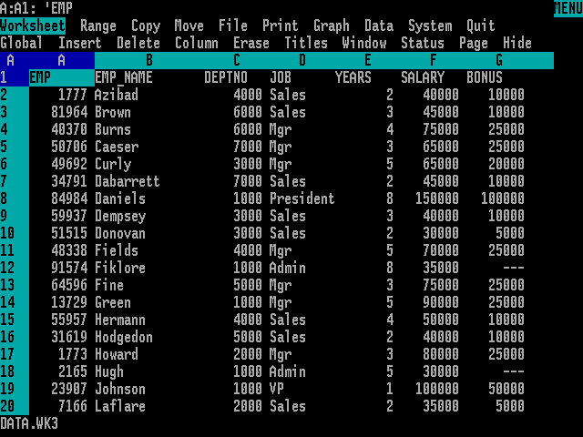
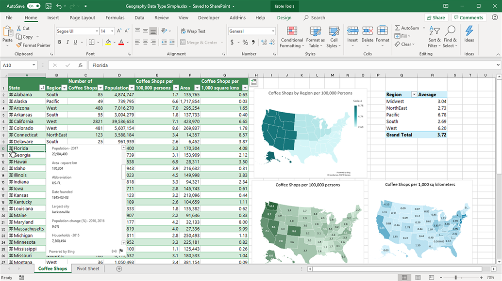

3 Herramientas para el análisis. La reproducibilidad.
3.1 Introducción
En este capítulo veremos las herramientas que utiizaremos en el análisis de datos industriales. Nos enfocaremos en dos de ellas: la hoja de cálculo Microsoft Excel, y el lenguaje de programación Python. Ambas herramientas están ampliamente extendidas en las empresas y en las instituciones docentes de todo el mundo. Python es, además del lenguaje de programación más utilizado en el mundo, un software libre, y por lo tanto, con un coste de adquisición cero, lo que facilita su utilización. Microsoft Excel tiene versiones web que se pueden utilizar para un uso básico también sin coste. No son las únicas opciones: hay otros programas estadísticos y de análisis muy utilizados y potentes, tales como Matlab o Minitab, que son de gran interés en ingeniería, aunque tienen un coste bastante elevado, y hojas de cálculo como Google Docs o LibreOffice, casi totalmente compatibles con Microsoft Excel.
3.2 La hoja de cálculo
La hoja de cálculo es una herramienta presente hoy día en todos los ámbitos de trabajo y educativos. Desde la aparición de Visicalc, en 1978, ha contribuido a la gestión de miles de empresas, se ha utilizado de manera general en análisis de datos y sus gráficos se han utilizado y se utilizan en publicaciones e informes de todas clases. En la década de los años 80 del pasado siglo, la hoja de cálculo Lotus 1-2-3 fue la aplicación más utilizada en los ordenadores IBM-PC y compatibles, y consiguió facturaciones millonarias para la empresa matriz. Lotus 1-2-3 dominó el mercado hasta la aparición de Microsoft Windows a finales de los años 80; este nuevo sistema operativo favoreció la implantación de Microsoft Excel, que desde entonces se convirtió en la hoja de cálculo dominante.



Aplicaciones de la hoja de cálculo
Las hojas de cálculo son muy útiles para recoger la información de un conjunto de observaciones. Entre sus principales usos, están:
- La introducción, edición y almacenamiento datos.
- El filtrado y corrección de errores.
- La manipulación básica, por ejemplo, mediante tablas dinámicas
- La preparación y edición de gráficos, incluyendo gráficos dinámicos
- La presentación de la información, con el apoyo opcional de herramientas adicionales como Microsoft PowerPoint.
Los datos se pueden recoger y guardar de múltiples formas. Cuando la recogida de datos se hace de forma manual en papel, es necesario registrar en el ordenador los datos recogidos. Lo más frecuente es que este registro se haga en hojas de cálculo, como Microsoft Excel o Google Sheets. En algunos casos, el almacenamiento se hace sobre bases de datos, genéricas o desarrolladas a medida.
Actualmente, la tendencia es recoger los datos o bien de forma automática, o bien de forma manual sobre sistemas informatizados (pantallas), lo que permite eliminar el papel y disponer directamente de los datos en un formato digitalizado.
En la actualidad, la mayoría de los equipos y líneas de producción se interconectan con los sistemas de información (ver IoT) y almacenan en tiempo real todos los datos necesarios, lo que libera al operario de la pesada tarea de reintroducirlos manualmente, a la vez que reduce los errores debidos a la imputación incorrecta.
En todos los casos, es imprescindible asegurar que los sistemas de información pueden exportar sus datos a ficheros de texto tipo fichero plano o tipo CSV, de forma que podamos importarlos tanto a Excel como a R, como veremos más adelante. Estos sistemas de exportación de datos deben diseñarse de forma flexible y abierta, para que tanto la captura como la exportación puedan modificarse y adaptar la recogida de la información a las necesidades de cada momento.
En este libro trataremos exclusivamente de lo que llamaremos datos rectangulares: grupos de valores que están asociados a una o más variables, y a varias observaciones. Hay muchos más datos que no se ajustan a esta organización tabular, es el caso de imágenes, sonidos o archivos documentales de texto. Pero la forma más común de almacenar datos industriales es la de las tablas rectangulares, organizadas según el principio de los datos arreglados, que detallaremos en el siguiente capítulo.
3.3 Los lenguajes de programación
Python en el análisis de datos industriales: una herramienta versátil
Python se ha convertido en el lenguaje de referencia para el análisis de datos en entornos industriales por su combinación de simplicidad, potencia y ecosistema científico. En industrias alimentarias, donde se manejan grandes volúmenes de datos de producción, calidad, trazabilidad y consumo energético, Python ofrece ventajas clave:
Ventajas técnicas
- Sintaxis clara y accesible: ideal para estudiantes sin experiencia previa en programación.
- Bibliotecas especializadas:
pandaspara manipulación de datos tabulares (ej. registros de producción, análisis de lotes).matplotlibyseabornpara gráficos de control, tendencias y correlaciones.numpypara cálculos numéricos precisos (temperaturas, tiempos, concentraciones).
- Automatización de tareas repetitivas: generación de informes, limpieza de datos, detección de anomalías.
Aplicaciones concretas en industrias alimentarias
- Control de calidad: análisis de desviaciones en parámetros críticos (pH, humedad, temperatura).
- Optimización de procesos: visualización de curvas de cocción, enfriamiento, fermentación.
- Trazabilidad: seguimiento de lotes desde materia prima hasta producto final.
- Seguridad alimentaria: detección de patrones en alertas sanitarias o fallos de producción.
¿Por qué incluir Python en la Formación Profesional?
Un módulo básico de Python y gráficos en programas de formación profesional en industrias alimentarias permite:
Desarrollo de competencias clave
- Alfabetización digital aplicada: no solo usar software, sino entender cómo se procesan los datos.
- Pensamiento lógico y estructurado: útil para resolver problemas técnicos y documentar procesos.
- Autonomía en el análisis: no depender exclusivamente de hojas de cálculo o software cerrado.
Enfoque pedagógico sugerido
- Aprendizaje basado en proyectos: por ejemplo, analizar datos reales de producción o simular un sistema de trazabilidad.
- Visualización como herramienta de comprensión: enseñar a interpretar gráficos de dispersión, histogramas, series temporales.
- Modularidad y reproducibilidad: fomentar el uso de scripts anotados y reutilizables, alineado con tu enfoque docente.
3.4 Otras herramientas: R, Julia
El software estadístico R
R es un lenguaje de programación y un entorno de software utilizado para el análisis estadístico, la visualización de datos y la modelización. Algunas de las características clave de R son:
Amplio espectro de funcionalidades: R abarca una amplia gama de herramientas y paquetes diseñados para realizar diversos análisis estadísticos, exploración de datos y modelización.
Herramientas gráficas: R dispone de algunas de las bibliotecas gráficas más potentes para la exploración y descripción de datos.
Estadística descriptiva: R ofrece funciones para calcular estadísticas descriptivas básicas, como la media, mediana, desviación estándar, varianza, rango, cuartiles y percentiles. Estas funciones son esenciales para explorar y resumir datos.
Contrastes de hipótesis: R proporciona funciones para realizar pruebas estadísticas, como t-tests, test chi-cuadrado, ANOVA y pruebas no paramétricas. Estas pruebas permiten evaluar hipótesis y comparar grupos de datos.
Distribuciones de probabilidad: R incluye una amplia variedad de funciones para trabajar con distribuciones de probabilidad (por ejemplo, normal, uniforme, binomial, Poisson). Esto es útil para generar números aleatorios, calcular probabilidades y cuantiles.
Bibliotecas de funciones (librerías): Además de las amplias funciones básicas de las que dispone, R es capaz de utilizar bibliotecas de funciones (llamadas librerías) que han sido desarrolladas por los propios usuarios, y que amplían sus funcionalidades a todos los campos imaginables, desde el análisis genético al análisis de riesgos bancarios o el control estadístico de procesos.
Usos y aplicaciones de R en la estadística industrial
En el contexto de la estadística industrial, R se utiliza para:
Control de calidad: R permite analizar datos de procesos industriales, identificar desviaciones y controlar la calidad de los productos.
Optimización de procesos: Mediante técnicas estadísticas avanzadas, R ayuda a optimizar procesos industriales, reducir costos y mejorar la eficiencia.
Análisis de fiabilidad: R se utiliza para evaluar la confiabilidad de sistemas y componentes en la industria.
Utilización práctica de R en el entorno industrial
[..a desarrollar..]
Importación de datos y exportación de datos
Manipulación de datos: depuración, corrección, filtrado de datos.
Exploración gráfica de los datos
Análisis estadísticos específicos.
Gráficos de control
Informes automatizados
El lenguaje Julia
Julia es un lenguaje de programación más reciente, diseñado específicamente para el cálculo numérico y la ciencia de datos. Ofrece un rendimiento cercano al de lenguajes de bajo nivel como C, pero con la sintaxis y facilidad de uso de lenguajes de alto nivel como Python y R. Julia es especialmente útil en aplicaciones donde el rendimiento es crítico, como en simulaciones industriales y análisis de grandes volúmenes de datos.
Ventajas
Rendimiento: Diseñado específicamente para computación numérica de alto rendimiento, Julia ofrece velocidades comparables a lenguajes compilados como C o Fortran, pero con una sintaxis más cercana a los lenguajes de scripting. Es excelente para cálculos numéricos intensivos y proporciona soporte nativo para paralelismo y computación distribuida.
Sintaxis expresiva: Su sintaxis es intuitiva y similar a la de lenguajes matemáticos, lo que facilita la escritura de código conciso y legible.
Interoperabilidad: Permite llamar a código escrito en otros lenguajes como C, Python o R, lo que facilita la integración con herramientas existentes.
En crecimiento: Aunque más joven que Python y R, Julia está ganando rápidamente popularidad en la comunidad científica y de datos.
En resumen, mientras que R sigue siendo una opción poderosa y preferida para la estadística industrial, Python y Julia se presentan como alternativas viables y, en algunos casos, superiores, dependiendo de los requisitos específicos del proyecto.
3.5 El concepto de reproducibilidad
La reproducibilidad de un ensayo o experimento es la capacidad de ser reproducido o replicado por otros, en particular, por la comunidad científica. La reproducibilidad se refiere a la capacidad de obtener resultados consistentes al replicar un estudio o experimento utilizando los mismos datos, metodología original y, en su caso, el mismo código informático empleado para los análisis.En otras palabras, cuando se replica un análisis de datos o un experimento, los resultados deben ser alcanzados nuevamente con un alto grado de confiabilidad.
La repetibilidad o replicabilidad se refiere a la posibilidad de obtener resultados consistentes al replicar un estudio con un conjunto distinto de datos, pero obtenidos siguiendo el mismo diseño experimental. Implica obtener resultados consistentes utilizando nuevos datos o nuevos resultados computacionales para responder a la misma pregunta científica.
El químico irlandés Robert Boyle, en el siglo XVII, subrayó la importancia de la reproducibilidad en la ciencia. Boyle sostenía que los fundamentos del conocimiento debían basarse en hechos producidos experimentalmente, que pudieran volverse creíbles para la comunidad científica por su reproducibilidad. La bomba de aire de Boyle, un aparato científico complicado y costoso en ese momento, condujo a una de las primeras disputas documentadas sobre la reproducibilidad de un fenómeno científico.
Importancia en la Ciencia
La reproducibilidad es esencial para la investigación científica, ya que permite validar y verificar los resultados obtenidos. En las últimas décadas, ha habido una creciente preocupación por la falta de reproducibilidad en muchos resultados científicos publicados, lo que ha llevado a una crisis de reproducibilidad o replicación. La reproducibilidad garantiza que los resultados científicos sean confiables y puedan ser validados por otros investigadores. Es un pilar fundamental para el avance del conocimiento en todas las disciplinas.
Reproducibilidad en metrología
En metrología, la reproducibilidad es la capacidad de un instrumento de dar el mismo resultado en mediciones diferentes, realizadas en las mismas condiciones a lo largo de periodos dilatados de tiempo. Esta cualidad debe evaluarse a largo plazo.
3.6 Ventajas de los lenguajes de programación en scripts frente a la hoja de cálculo en la reproducibilidad de un análisis
Las ventajas de utilizar un lenguaje de scripts en lugar de hojas de cálculo tradicionales (como Microsoft Excel) incluyen:
- Código abierto (scripts): los lenguajes permiten crear flujos de trabajo basados en código, lo que mejora la reproducibilidad de los análisis y facilita la colaboración entre investigadores. Puedes escribir scripts en
Pythonpara automatizar tareas y asegurar la reproducibilidad. Los scripts son transparentes y pueden ser compartidos y verificados por otros investigadores. - Flexibilidad estadística:
Pythones especialmente útil para técnicas avanzadas de análisis, lo que lo convierte en una excelente opción para investigadores que buscan análisis de vanguardia, como es el caso de los modelos de inteligencia artificial (IA) - Gráficos muy potentes y completos: Los gráficos disponibles en estos lenguajes son una de sus fortalezas, no sólo por su variedad sino también por su flexibilidad.
- Capacidad para tratar grandes cantidades de datos: pueden manejar grandes conjuntos de datos sin problemas, lo que es fundamental en la estadística industrial.
- Precisión: Aunque no está diseñado específicamente para el análisis estadístico, como sí es el caso de R,
Pythonpuede realizar todos los análisis que se necesitan en el entorno industrial, y es más preciso que Excel en ciertos casos, como en análisis de regresión lineal. - Capacidad avanzada:
Pythonofrece una amplia gama de librerías y funciones para realizar análisis estadísticos avanzados, como modelos lineales, series temporales, análisis multivariante y más.
Por su parte, la hoja de cálculo tiene una curva de aprendizaje más sencilla y es en general más fácil de usar, pero tiene algunos inconvenientes:
- Inexactitudes: Estudios han demostrado que Excel puede mostrar ciertas inexactitudes en análisis de regresión lineal y otros métodos estadísticos.
- Limitaciones gráficas: Los gráficos de Excel son bastante limitados cuando se trata de presentar información sobre un análisis de datos.
- Limitaciones estadísticas: Excel no está diseñado específicamente para análisis estadístico avanzado, por lo que puede carecer de algunas capacidades necesarias para investigaciones más complejas.
- Falta de transparencia para la auditoría: Las fórmulas y cálculos en Excel pueden ser difíciles de rastrear y verificar, lo que afecta la reproducibilidad.
Por estas razones usaremos Excel para el almacenamiento de datos y el análisis básico, y usaremos Python para el análisis gráfico más detallado y el análisis numérico y estadístico.